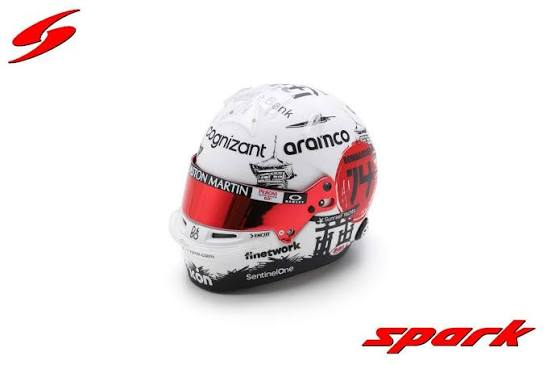
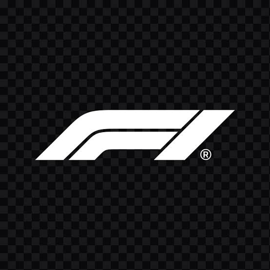

A Pole Position F1 Store nasceu da paixão de um grupo de amigos que nunca perdeu uma
largada. Desde as madrugadas assistindo ao Grande Prêmio do Japão até as tardes de
domingo em Interlagos, sempre sonhamos em ter um lugar onde os fãs de Fórmula 1
pudessem encontrar tudo o que amam em um só espaço.
A Fórmula 1 é a principal categoria do automobilismo mundial. Criado em 1950, o
campeonato reúne equipes, pilotos e engenheiros que buscam, corrida após corrida, o
limite da velocidade, da tecnologia e da estratégia. Aqui, você encontra peças que
levam um pouco dessa emoção para o seu dia a dia.
Trabalhamos com produtos selecionados, com qualidade e atendimento de quem entende do
assunto. Seja você um fã de longa data ou alguém que acabou de descobrir o esporte,
será muito bem-vindo ao nosso pit stop.

Nossa linha de produtos foi pensada para quem vive a F1 de ponta a ponta. Temos
miniaturas de carros em escala 1:43 e 1:18, réplicas de capacetes de pilotos
lendários, camisetas oficiais das equipes, bonés, canecas e pôsteres de grandes
corridas.
Cada item passa por uma checagem de qualidade antes de chegar às prateleiras, porque
na F1 cada detalhe conta, e na nossa loja também. Nos fins de semana de Grande
Prêmio, montamos uma área com transmissão ao vivo da corrida para os clientes.
Faça uma visita, escolha o seu favorito e leve para casa um pedaço da história do
automobilismo.
